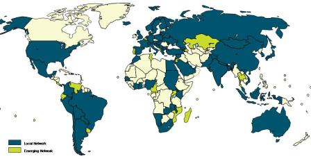

Home / Overview

Local networks are clusters of participants who come together to advance the Global Compact and its principles within a particular geographic context. They perform increasingly important roles in rooting the Global Compact within different national, cultural and language contexts, and also in helping to manage the organisational consequences of the Compact’s rapid expansion. Their role is to facilitate the progress of companies (both local firms and subsidiaries of foreign corporations) engaged in the Compact with respect to implementation of the ten principles, while also creating opportunities for multi-stakeholder engagement and collective action. Furthermore, networks deepen the learning experience of all participants through their own activities and events and promote action in support of broader UN goals.
Local networks play an essential role in the initiative and are an integral part of the overall governance of the Compact. They and their annual meeting - the Local Networks Forum - comprise two of the six entities with differentiated tasks within the Global Compact’s multicentric governance framework. Company participants, including their subsidiaries, are encouraged to be involved in Local Networks.
Local network representatives come together for an annual meeting coordinated and chaired by the
Global Compact Office, which is known as the
Annual
Local Networks Forum. The purpose of the Local Networks Forum is for Local Networks to learn
from each other’s experiences in building a network, review and compare progress, identify best
practices and adopt recommendations intended to enhance the effectiveness of Local Networks,
including relating to governance.
|
|||||
Contact
Soren Mandrup Petersen
Head of Networks
petersens@un.org
+1-917-367-3421
| Nessa Whelan
Network Coordinator Europe (East and West), Asia and Australia whelan@un.org +1-917-367-6001 |
Jonas Haertle
Network Coordinator Americas (North and South), Africa and Middle East haertle@un.org +1-212-963-0268 |